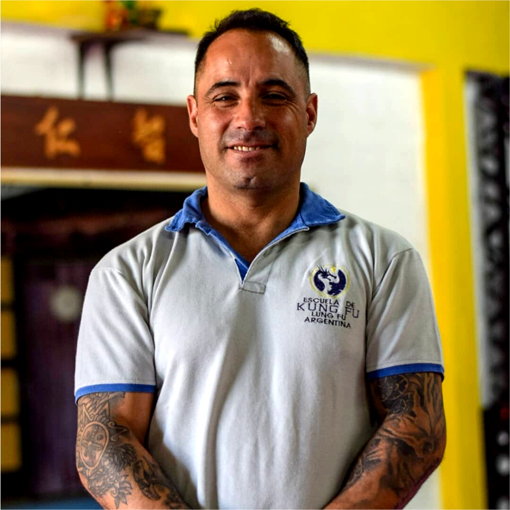
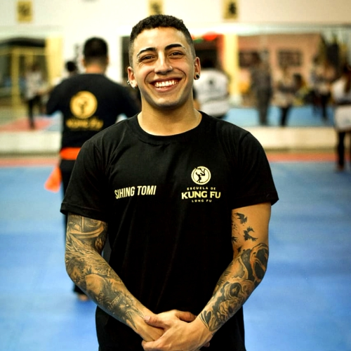
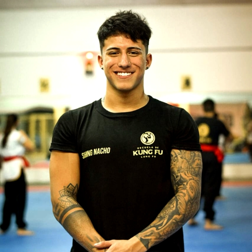
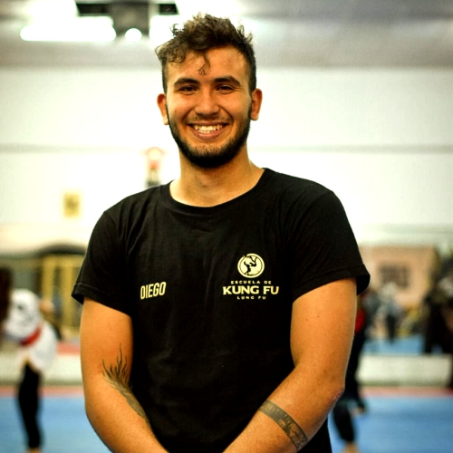
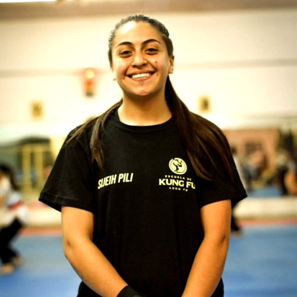
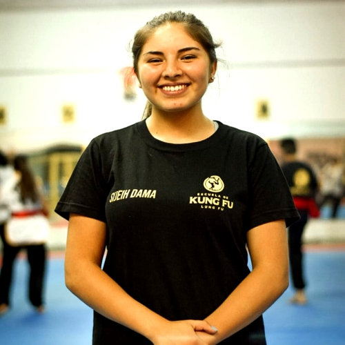

Integridad • Bondad • Sabiduría • Bravura
Clases de Kung Fu para hombres y mujeres de todas las edades.
Clases especiales para niños a partir de 5 años.
Sanda - Boxeo Chino
¿Quiénes Somos?
Escuela de Kung Fu Lung Fu fue fundada en 2005 en Natal - Río Grande del Norte por Sifu José Luiz Balestrini. Con su crecimento, muchos discípulos de Sifu Balestrini se formaron como instructores y se exparcieron por Brasil. Contando hoy con varias Sedes y con una sede actualmente en São Paulo, la Escuela de Kung Fu Lung Fu trabaja buscando siempre la excelencia en la enseñanza del arte marcial. Más que técnicas de lucha, el arte marcial se basa en el uso de su filosofia para lograr un desenvolvimiento como mejores seres humanos. A través del entrenamento del cuerpo y de la mente buscamos un conocimento mayor de nuestro ser para trabajar y mejorar quiénes somos.
A lo largo de los años, la Escuela de Kung Fu Lung Fu ayudó a difundir el arte marcial china y su filosofía para muchas personas a través de clases a beneficio, proyectos sociales, organización de campeonatos y eventos. Participando de competencias nacionales e internacionales (China, EUA, Argentina, etc...) llevando a muchos de nuestros alumnos a representar a la escuela en esas competiciones además de tener varios atletas convocados para la selección brasileña de Kung Fu. Trabajamos unidos con Tat Wong Kung Fu Academy, que es actualmente una de las más renombradas en las Artes Marciales Chinas (Kung Fu) en Brasil y en el mundo. Apoyado por el Gran Maestro Tat Mau Wong (China / EE.UU.), su representante en Brasil, Sifu José Balestrini dirige la Escuela de Kung Fu Lung Fu comandando un equipo de instructores bien entrenados y comprometidos con el desenvolvimiento del Kung Fu Tradicional.
Maestros
ES MEJOR
CONQUISTARSE
A SÍ MISMO
QUE VENCER
EN MIL
BATALLAS
El Gran Maestro Poon Sing fue uno de los más respetados Maestros de Choy Lay Fut, nacido en 1927, en Quanjo, China, murió en el año 2015. Fue un hombre que dedicó su vida no sólo a su propia formación, sino también desarrolló
muchos grandes y exitosos luchadores y se dedicó a promover el arte del Choy Lay Fut internacionalmente. Poon Sing fue el sexto hijo del renombrado Gran Maestre Poon Dik, 3ª Generación de Choy Lay Fut. Él fue entrenando
por su propio padre, cuyo nombre se convirtió en una leyenda por ser un excelente artista marcial del estilo Choy Lay Fut de Kung Fu. Nuestro Gran Gran Maestro Poon Sing, mientras vivió, tuvo el mayor rango dentro del estilo.
Poon Sing fue Maestro de Lee Koon Hung, que a su vez fue Maestro de Tat Mau Wong despues de la muerte de Lee Koon Hung, Poon Sing aceptó al Maestro Tat Mau Wong como discípulo directo.
Considerado uno de los 100 más influyentes artistas marciales del siglo XX por la revista Inside Kung Fu. Seleccionado como Hombre del Año, practicante de Kung Fu del Año e Instructor del Año por Black Belt Hall of Fame.
El día 13 de noviembre fue proclamado el Día del Maestro Tat Mau Wong por el alcalde Willie Brown en San Francisco, California. Nacido en Hong Kong, el Gran Maestro Tat Mau Wong está involucrado con las artes marciales
desde 1963. Pasó muchos años estudiando Choy Lay Fut Kung Fu bajo la tutela del Gran Maestre Lee Koon Hung y posee experiencia en otras artes marciales también. Hoy, después de muchos años de dedicación a la práctica y
la enseñanza del Kung Fu, el Gran Maestro Tat Mau Wong es reconocido mundialmente como un líder en lo que refiere a las artes marciales chinas.
SI CREES QUE
ALGO ES IMPOSIBLE,
LO
CONVERTIRÁS
EN ALGO
IMPOSIBLE
SE DICE QUE NINGÚN ÁRBOL PUEDE CRECER HASTA EL CIELO, A MENOS QUE SUS RAÍCES ALCANCEN LAS PROFUNDIDADES.
Sifu José Balestrini
Recibido en Psicología por la Universidad de São Paulo (USP), especialista en medicina china y psicología junguiana, busca a través del arte marcial traer enseñanzas orientadas hacia el equilibrio de la mente-cuerpo, buscando
siempre ayudar en la ampliación de la conciencia humana. En las artes marciales, desde los 9 años de edad fue discípulo directo del Maestro de Paula y hoy está bajo el mando directo del Gran Maestro Tat Mau Wong. Fundó
la Escuela de Kung Fu Lung Fu en el 2005,cuando abrió su primera academia localizada en Natal, en Rio Grande del Norte. Además de entrenar directamente con el Gran Maestro Tat Mau Wong (EE.UU.), estuvo repetidas veces en
China y tuvo la oportunidad de aprender del Gran Maestro Poon Sing (Hong Kong). A través de su trabajo entreno discípulos que continúan diseminando sus enseñanzas por todo el país. Recibió la graduación de Sifu en 2012
por el Gran Maestro Tat Mau Wong. Su escuela esta en el barrio de Moema en São Paulo, donde imparte clases y también atiende como psicoterapeuta.
Estilo
Kung Fu es el término que se ha popularizado en occidente para referirse a las artes marciales chinas. En China tambien pueden ser llamado Wushu (arte de la guerra) o Kuoshu (arte nacional). Son técnicas desarrolladas, entre otras formas a partir de la observación de animales en la naturaleza y sistematizadas para el combate. Actualmente las artes marciales se practican con el propósito de desarrollar no sólo la defensa personal, sino también como una forma de mejorar la calidad de vida a través del entrenamiento de la mente y del cuerpo. En la Escuela de Kung Fu Lung Fu enseñamos el estilo Choy Lay Fut (se lee: choi lí fá), es uno de los más eficientes y populares estilos de Kung Fu practicados en la actualidad. La historia de la creación y desarrollo del Choy Lay Fut alcanza más de un siglo atrás. Sus movimientos se basan en cinco animales: dragón, serpiente, tigre, pantera y grulla. El entrenamiento contiene técnicas de Taolu / Kati (formas) de manos y armas, defensa personal, combate, torsiones, proyecciones, condicionamiento físico, respiración y trabajo de la energía interna del cuerpo.
Historia del Choy Lay Fut
Existen versiones diferentes de la creación del estilo. ¿Qué tememos como oficial confirmado en la entrevista de Gran Maestro Poon Sing y Gran Maestro Tat Mau Wong? A continuacion un resumen de la historia: El Choy Lay Fut es el resultado de una combinación de técnicas de diferentes estilos, sintetizadas en un sistema único con la intención de desarrollar o máxima efectividad. El fundador, Chan Heung, inició su práctica desde joven entrenando con su tío Chan Yuen Wu. Después de algunos años su tío viajó y, para que el joven no interrumpiera sus entrenamientos, lo encaminó para convertirse en discípulo de Choy Fook, un maestro del estilo Choy Gar de Kung Fu y discípulo del famoso Choy Gau Yee, uno de los monjes sobrevivientes de la destrucción del Templo Shaolin y fundador de uno de los cinco estilos originales de Kung Fu del sur de China. Después de algunos años bajo la tutela de Choy Fook, éste decidió que sería necesario enviar a Chan Heung para aprender con otro maestro para desarrollar su Kung Fu. Choy Fook lo encaminó al monje Lay Yao San, otro sobreviviente de la destrucción del Templo Shaolin y compañero de Choy Gau Yee. Después de años entrenando con Lay Yao San, Chan Heung vuelve a su pueblo de origen y establece su escuela.
Tras pasar algunos años enseñando en su Escuela, Chan Heung recibe a un joven llamado Jeung Yim. Jeung Yim era también practicante de Kung Fu y había aprendido su técnica con su tío Jeung Kwoon. Jeung Kwoon había sido discípulo de Lay Yao San e imposibilitado de continuar enseñando a su sobrino, debido a esto lo envía para aprender con Chan Heung. Sin embargo, debido a las reglas de la aldea donde vivía, le prohibieron a Chan Heung enseñar a Jeung Yim ya que él no era natural de allí. Desobedeciendo la ley de la villa, Chan Heung pasa a enseñar a Jeung Yim. Un tiempo después los ancianos de la aldea descubren lo que estaba pasando y Jeung Yim está obligado a dejar la Escuela. El maestro no podía dejar a su pupilo desamparado y lo lleva a entrenar con un místico monje que vivía aislado en las montañas. Chin Cho, el Monje Yerba Verde,quien lo acepta como discípulo. Jeung Yim pasa diez años aprendiendo de Chin Cho y regresa a la aldea de Chan Heung como un maestro y no más como un simple alumno. Antes de dejar Chin Cho, el monje cambia su nombre de Jeung Yim a Jeung Hung Sing (traducido como "Victoria Brillante") como indicación de que él sería fundamental en la lucha contra la dinastía opresora que gobernaba China en la época.
El Choy Lay Fut surge entonces de la enorme experiencia marcial que Chan Heung adquirió durante sus años de práctica y enseñanza aliado a las contribuciones que Jeung Hung Sing trajó con lo que aprendió directamente del Monje Yerba Verde. Chan Heung es considerado el fundador del estilo y Jeung Hung Sing el co-fundador. El nombre del estilo hace alusión a los maestros de los fundadores y sus estilos: Choy Fook, Lay Yao San, y Fut (que significa Buda), ya que el Monje Yerba Verde había renunciado a su propio nombre. Otra versión dice que el nombre del estilo en realidad surgió porque practicantes de otros estilos podían identificar en las técnicas de los practicantes de Choy Lay Fut las técnicas de las tres familias de Kung Fu: Choy Gar, Lay Gar y Fut Gar. Es claro que la Historia es mucho más rebuscada y llena de detalles que eso. Este resumen es sólo para tener una idea de cómo ocurrieron los hechos.
Niños
En la Escuela de Kung Fu Lung Fu nos organizamos en dos grupos de niños, uno que va de los 5 a los 7 años (Tiger Team) y otro que va de los 8 a los 12 años (Niños). Los beneficios de entrenar un arte marcial durante estas fases son innumerables: aprender técnicas de autodefensa, desarrollar habilidades físico-motoras, disciplina, autoconfianza, trabajo en equipo y desarrollo de carácter son algunos ejemplos. Los entrenamientos son dados de forma lúdica y dinámica, pero siempre con el objetivo de desarrollar el cuerpo y la mente de los pequeños. A través del incentivo a buenas prácticas alimenticias y buenos desempeños Buscamos ser una ayuda en la formación del niño, proporcionando el aprendizaje de un arte marcial tradicional y toda su filosofía de manera divertida y atractiva a los niños.
Preguntas Frecuentes
Clase de Prueba
Cualquier persona puede entrenar a Kung Fu independientemente de su edad, sexo o preparación física. Nosotros en la Escuela de Kung Fu Lung Fu le ayudaremos a alcanzar sus objetivos respetando siempre los límites y el ritmo de cada uno. La clase de prueba tiene como función ayudar en sus primeros pasos dentro de la academia. En ella aprendes técnicas básicas de golpes, patadas, defensa personal y condicionamiento físico, además de conocer un poco más de la filosofía oriental.
Esta clase es programada para que podamos ofrecerle la máxima atención al alumno haciendo la experiencia lo más agradable posible. En ella usted podrá consultar sus dudas y entender cómo funciona la didáctica diferenciada de nuestro
método de enseñanza.
• Asistir con ropas que no obstaculicen sus movimientos (leggins, pantalones deportivos, ropa de gimnasia, camiseta y etc.).
• Llegue al menos 10 minutos antes del horario programado.
Ubicación
Sede Central
Rivadavia 370 - Godoy Cruz
Mendoza
(54) 261-3667272
Sihing Claudio Gómez
Instructores

Sihing Claudio Gómez
Cuenta con 15 años de práctica de ininterrumpida de Kung Fu siempre con el estilo Choy Lay fut. Anteriormente practicó Karate Goyu Riu durante 2 años llegando a alcanzar la categoría de Faja Marrón, y también practicó Taekwondo en cuya disciplina llegó a Faja Roja durante sus 2 años de práctica. Asistió a seminario nacionales e internacionales con Maestros de renombre, Torneos de Kung Fu, Karate y Sanda. Cuenta con varios cursos de salud, técnicas de combate, defensa personal y preparación física. Es actualmente director de Escuela de Kung Fu Lung Fu Argentina y representante de Escuela Lung Fu en Argentina, la cuál cuenta con la representación Oficial del Gran Maestro Tat Mau Wong.
Sihing Tomás Gómez
Campeón nacional en 3 especialidades diferentes, Campeón en Chile y Torneos en Brasil. Cuenta con varios cursos de salud, técnicas de combate, defensa personal y preparación física.Intructor de:
- Kung Fu Adultos
- Kung Fu Niños
- Sanda Cardio

Sihing Ignacio Gómez
Campeón nacional en sanda 60kg , Campeón en Chile y subcampeón en Brasil. Cuenta con varios cursos de salud, técnicas de combate, defensa personal y preparación física.Intructor de:
- Sanda

Sihing Diego Soleti
Preparador físico, especialista en musculación y nutrición deportiva, instuctor encargado de Musculación de Lung Fu Argentina.
Sijeh Pilar González
Es actualmente la instructora más jóven de la Escuela.Intructor de:
- Kung Fu Niños

Sijeh Dámaris Arabena
Campeona Nacional en 3 especialidades diferentes y campeona en Chile.Intructora de:
- Kung Fu Niños